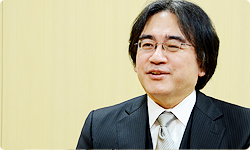
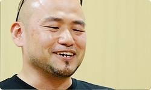

<div class="l-category-local-header">
<div class="category-local-header">
<div class="category-local-heading"><span>社長が訊く</span>
<div class="category-local-sub">IWATA ASKS


<div class="l-soft-topic-path is-block">
<div class="l-soft-topic-path-inner">
<div class="soft-topic-path">
<ul class="topic-path"><li class="topic-path-item"><span>The Wonderful 101</span></li></ul>


<div id="page-container">
<header class="interviewheader">
<h2 class="interviewheader__ttl"><span class="subtext">社長が訊く</span>『The Wonderful 101』</h2>

</header>
<div class="tabmenu-container">
<p class="tabmenu__ttl">シリーズ一覧
<ul class="tabmenu__body tabnum2">
<li class="tabmenu__item tab1">神谷 英樹さん 篇</li>
<li class="tabmenu__item tab2">開発スタッフ 篇</li>
</ul>

<div class="hero-container">
<div class="hero__img">
<p class="hero__note">本文の一部を引用される場合は、必ず、本ページのURLを明記、<br>または本ページへのリンクをしていただくようお願いいたします。

<div class="interviewsubheader">
<div class="interviewsubheader__ttl"><h2>神谷 英樹さん 篇</h2>

<div class="pageindex-container">
<p class="pageindex__ttl">目次
<ul class="pageindex__body">
<li class="pageindex__item active">1. ファミコン長者</li>
<li class="pageindex__item">2. リアル信者バトル</li>
<li class="pageindex__item">3. 「遊んできたものの中に、答えがある」</li>
<li class="pageindex__item">4. 三上さんとの出会い</li>
<li class="pageindex__item">5. 「ゲームの神様が降りてくる」</li>
</ul>

<div class="interview-container">
<h3 class="interview__ttl">1. ファミコン長者</h3>

岩田
: プラチナゲームズ（※1）さん開発によるWii Uソフト<br>『The Wonderful 101』の「社長が訊く」は、<br>今回２部構成でお送りします。<br>第１部は、ディレクターを務める<br>神谷さんにサシでお訊きしたいと、<br>わたしからリクエストさせていただきました。<br>今日はよろしくお願いします。

※1プラチナゲームズ＝プラチナゲームズ株式会社。２００６年に設立された家庭用テレビゲームの開発会社。２０１３年８月２４日に『The Wonderful 101』（Wii Uソフト）の発売を控え、現在『ベヨネッタ２』（Wii Uソフト）を開発中。本社は大阪。プラチナゲームズについてくわしくは、<span>社長が訊く「プラチナゲームズ」</span>を参照。


神谷
: こちらこそ、よろしくお願いします。


岩田

: あっ、そのＴシャツは『101』ですか？


神谷
: はい（笑）。これを着て来ました。


岩田
: いいですね（笑）。<br>今回は『The Wonderful 101』というゲームのことをお訊きする前に、<br>神谷さんという、とてもエネルギッシュにものをつくる人が<br>どうやって生まれたのかというところから、<br>お訊きしたいと思っていたんです。


神谷
: 光栄です。


岩田
: まず最初に、神谷さんと<br>ビデオゲームとの出会いから<br>お訊きしたいのですが。


神谷
: 出会いははっきり覚えてはいないんですが、<br>生まれて物心ついた頃から<br>あのピコピコいうデジタルな音に親しんで、<br>とても身近なものだった記憶があります。


岩田
: ゲームを遊んだのは、もっぱら自分の家でですか？<br>それとも別のところでしたか。


神谷
: 最初はたぶんデパートのゲームコーナーとか、<br>ああいうところで遊んでいましたね。<br>でも小学生の頃に、テレビべーダー（※2）とか<br>カセットビジョン（※3）、ぴゅう太（※4）、<br>インテレビジョン（※5）とか、<br>テレビにつないで遊べるものが出てきたんですよね。

※2テレビべーダー＝エポック社が１９８０年に発売した家庭向けテレビゲーム。いわゆるインベーダーを打ち落とすタイプのシューティングゲーム。
※3カセットビジョン＝エポック社が１９８１年に発売した、カセット式の家庭用ゲーム機。
※4ぴゅう太＝１９８２年にトミー（現タカラトミー）より発売された１６ビットゲームパソコン。
※5インテレビジョン＝米マテル社が１９８０年に発売した家庭用ゲーム機。 日本では１９８２年にバンダイ（現バンダイナムコゲームス）から発売。


岩田
: はい、当時は家庭用ゲーム機が<br>各社からさまざまに出ていましたからね。


神谷
: そういう、家で遊べるゲーム機が<br>すごくほしかったんですけど、<br>家がけっこうきびしかったので、<br>買ってもらえなかったんです。


岩田
: 当時は、みんなそうでしたよね。<br>だいたい、持っている人の家に行って<br>遊ばせてもらう場合が<br>多かったんじゃないかと思います。


神谷
: 僕の場合は近所の上級生が<br>カセットビジョンを持ってたんですよ。<br>どうしても遊びたいから<br>その上級生の家に行くんですけど、<br>彼がいじめっ子なんで、<br>行くたびにいじめられるんです。


岩田
: たとえいじめられても、遊びたかったんですか？


神谷
: はい。<br>「いじめられずに家にいるか、カセットビジョンか」<br>でいったら、断然カセットビジョンでした。<br>行くたび殴られて帰ってくるんですけど、<br>それでもまた翌日行くんです。


岩田
: でもそれだけ強く<br>魅力を感じていたわけですよね。<br>いったいゲームの何が、<br>当時の神谷さんをそこまで<br>引きつけたんでしょう？


神谷
: それは不思議なんですよね。<br>さっきも言ったんですけど、<br>僕はあの電子音が好きで、<br>普通の音楽を聴くより<br>そういう音楽を聴いていたほうが、<br>心地よかったんです。<br>ゲームの手ざわりももちろんなんですけど、<br>その音楽が耳にすごくなじむ感じで。


岩田
: 生まれながらに、<br>そういう好みがあったんですかね。




神谷
: そんな気がします、いま思えば。


岩田
: 最初に手に入れたゲーム機は<br>なんだったんですか？


神谷
: 中学の１年か２年の頃、<br>お年玉でファミコンを買いました。


岩田
: 長い渇望と苦難を乗り越えて、<br>ようやく自分の家でゲームを遊ぶ手段を<br>手に入れたわけですね。


神谷
: そうですね。でも「買っていい」という<br>許可が出てからもすぐには買えなくて。<br>そのとき空前のファミコンブームのさなかで、<br>どこにも売ってなかったんです。


岩田
: あぁ、あの当時ファミコンは<br>買いたくても、なかなか買えませんでしたよね。


神谷
: 友達もほとんどまだ持ってませんでした。<br>そんな中、近所のデパートの初売りで<br>「先着１０名販売！」というのがあったので、<br>はりきって朝４時に起きて行ったんですよ。<br>でも着いたらもう、先に１０人並んでて・・・。


岩田
: それは、ショックだったでしょうね（笑）。


神谷
: 僕、実家が長野県の松本なんですけど、<br>僕より根性のあるやつが<br>松本だけでも１０人いたわけです。


岩田
: ははは（笑）。<br>「オレはまだまだゲーム愛が足りない」と。


神谷
: 足りなかったんですよ。<br>それでとぼとぼ帰ってきたんですけど、<br>ちょうど偶然、正月休みで<br>遊びに来ていた従兄弟の知り合いが、<br>ファミコンをゆずってくれるというんです。<br>しかもゲーム１５本付き３万円という破格で。


岩田
: それ、ものすごくラッキーじゃないですか。


神谷
: はい。それで一夜にして、<br>“ファミコン長者”になったんです。<br>いま思えばぜいたくですよね、<br>あの頃にカセット１５本というのは。


岩田
: たしかに。当時そんなにカセットを<br>持っている中学生はまずいなかったでしょう。


神谷
: そうですね。僕、自分のお金で<br>いちばん最初にお店で買ったゲームは<br>『ナッツ＆ミルク』（※6）なんですけど、<br>それは本体を買う前に買って、<br>ずっとカセットと説明書を眺めてたんです。

※6『ナッツ＆ミルク』＝１９８４年７月にハドソンよりファミコン用ソフトとして発売されたアクションゲーム。


岩田
: そうでしたか（笑）。<br>そんな中学生がいきなり１５本も手にするなんて、<br>ものすごい体験ですよね。


神谷
: はい。みんなが僕のところに<br>ソフトの貸し借りにやってきて。<br>それからはもう、ファミコン漬けの毎日です。<br>僕くらいの世代はみんな、<br>子供の時そうだったと思いますけれど。


岩田
: ゲームセンターに行かなければ<br>遊べなかったものが<br>家で遊び放題になるわけですから、<br>それはもう、夢みたいなことだったでしょう。


神谷
: そのとおりで。<br>しかもファミコンのゲームは<br>もう、アーケードそのままじゃないですか。<br>もう、とんでもない垂涎の的なわけで。<br>いま思い返しても、<br>あの時ほどゲーム機を買って<br>喜びと興奮を感じたことはなかったです。




岩田
: まあ、我慢していた時間の長さや<br>渇望でたまっていったエネルギーの大きさなど、<br>あらゆる意味で喜びが爆発する条件が<br>そろったわけですからね。


神谷
: そうですね。<br>逆に言えば、何かを買って<br>あれほどうれしく感じることは、<br>自分の人生であとにも先にもないでしょうね。<br>それくらい、強烈な出来事でした。


<li class="pagination-next"><span>2. リアル信者バトル</span></li>
</ul>
<div class="listbtn-container">
<p class="listbtn__item">社長が訊く 一覧

